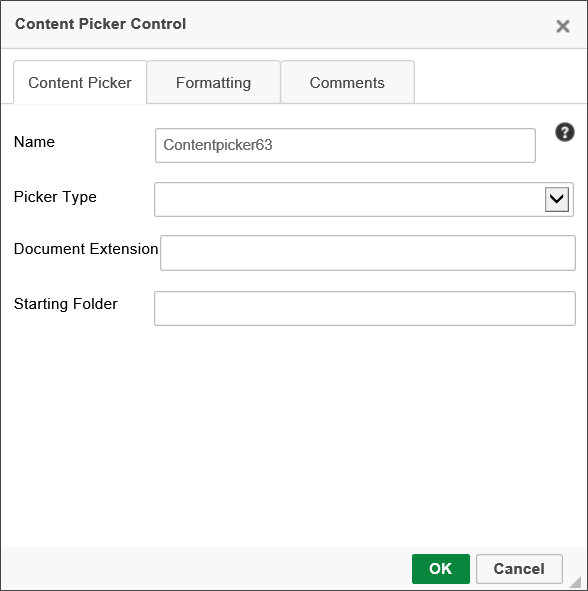
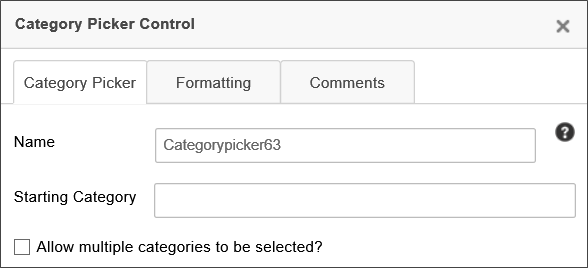
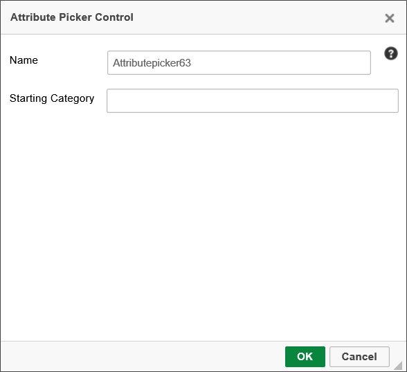
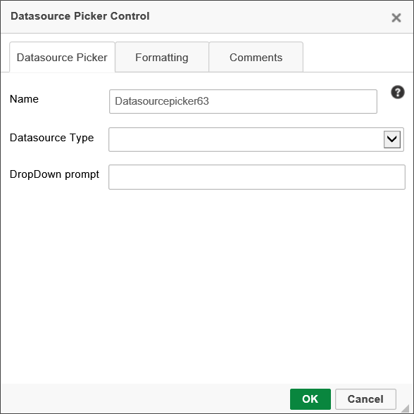
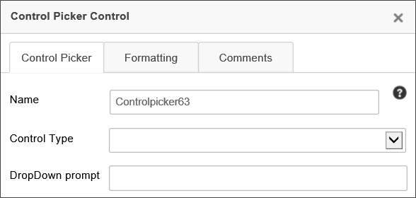
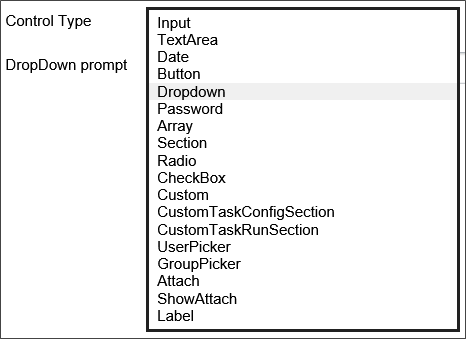
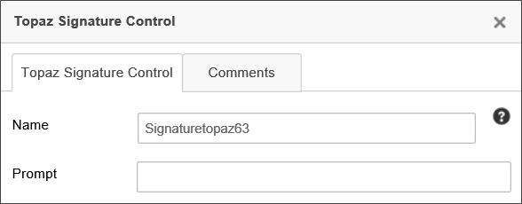
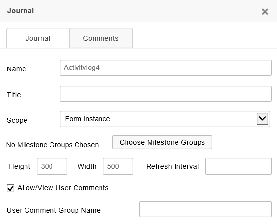

The following controls are available from the Other Input Controls control menu dropdown in the online Form Designer.
Content Picker
This control enables the user to select objects within the Content List (e.g. process definitions , form definitions, etc.)
The Content Picker options allow you to set the following properties:

Name: The control name.
Picker Type: The type of object it can pick from the Content List. The available options are:
Document
Folder
Business Rule
Knowledge View
Workflow
Workflow Instance
Form
Form Instance
Dropdown Object
Database Connection
Process Timeline
Timeline Instance
Process
Document Extension: An optional comma-separated list of document extensions, e.g., "doc, docx, pdf, xls, xlsx", the object must have if it is a document. Only documents with the configured file extension(s) will be visible for selection.
Starting Folder: The folder path of the highest-level folder the user will be allowed to access when selecting documents.
Category Picker
The Category Picker enables the user to select from one or more categories in the Process Director Meta Data schema for the partition in which the Form resides.

You can configure the Name of the category picker, and the Starting Category property is the highest-level category that the user can select when using the category picker. You can also allow the user to select multiple categories by checking the Allow multiple categories to be selected? check box.
For more information about Meta Data and its use, please see the Meta Data topic.
Attribute Picker
This control enables the user to select an attribute in the Process Director Meta Data schema.

The attribute properties can be accessed by double clicking the attribute control. You can configure the control’s Name, and the Starting Category property is the highest-level category that the user can select when using the control to find attributes.
For more information about Meta Data and its use, please see the Meta Data topic.
Datasource Picker
The Datasource Picker control enables a user to select one of the Datasources that have been added to the Process Director installation.

The Datasource Type property enables you to select the specific type of Datasource, (e.g., Oracle, SQL Server, Box.net, etc.) that you'll allow the user to select.
The Dropdown Prompt property enables you to specify the prompt you'd like the user to see.
Control Picker
The Control Picker control enables a user to select one of the available form controls.

The Control Type property enables you to select the control type that you'll allow the user to select. The Available options are shown below.

The Dropdown Prompt property enables you to specify the prompt you'd like the user to see.
Topaz Signature Control
This control is a special signature control designed to be used with electronic signature pads and signature software produced by Topaz Systems. For users of Topaz Systems components, this signature control would be used in lieu of the regular Signature control.

In the Form definition's Form Controls tab, this control has Min and Max properties that you can use to specify the minimum and/or maximum size of the signature, measured in points, to display the control.
The Topaz Signature Control will only work with properly installed Topaz Signature devices. These devices, when installed, should be read as a normal input device, like a keyboard or mouse. This control requires no special configuration other than that the Topaz signature device, with the appropriate browser plug-ins, is installed on the client machine. Please refer to the documentation for your Topaz Signature device for information on how to ensure the device is configured to work properly with a web browser.
Journal
The Journal control enables you to display threaded comments from users. This control should replace the CommentLog control on most forms, and provides a better view of user comments, because comment threading is built into the control, unlike the Comment Log.
In addition to serving as a comment log, the Journal control has the equally important feature of being able to display all Milestones configured in the Milestones tab of the Timeline, Form, and Folder Definitions. Milestones drive collaboration through the Journal control, because the Journal provides a semantic history of cases, processes, and more, which are derived from the Milestones that occur.
For more information about Milestone events, see the Milestones topic.

The following properties are available:
The Name property specifies the name of the control.
The Title property specifies the text that will appear in the title bar of the Journal control when it is displayed on the form at run time. If you leave this property blank, the default title will be "Journal".
The Scope property enables you to determine at what level to capture events. By default, the scope is limited to just Activity log events that are specified in the Form definition. You can change the scope to the following settings.
SCOPE
DESCRIPTION
Limit to Case
Only show events from objects that are part of the current Case.
Limit to Form
Only show events that are specified in the current Form definition.
Limit to Process
Only show events from objects that are part of the current Process.
No Limit
Show any events from any object. This setting uses the widest possible scope, and will show any matching events.
The Milestone Groups property enables you to optionally display selected Milestones, in addition to, or in lieu of, user comments. To select the Milestone Groups you'd like to display, click the Choose Milestone Groups button to open the Milestone chooser dialog, and select the desired Milestone Groups to display in the log.
The size of the control's appearance at run time is set using the Width and Height properties, both of which specify the size in pixels or percentages. As a best practice, you should set the Width to "100%" to fill the horizontal area of the viewport automatically, for accessibility purposes. The Height, on the other hand, should be set in Pixels, which will display the height of the control at a fixed size.
The Refresh Interval determines the amount of time, in seconds, between each time the log is refreshed. Leaving this property blank will ensure that the log doesn't refresh automatically.
The Allow/View User Comments is turned on by default, so that you can use the Journal as a comment log. Unchecking this property will disable user comments. For Process Director v5.26 and higher, the data entry text box on the Journal control is resizable at run-time, within its parent container, which won't resize.
The User Comment Group Name property enables you to specify a group with which to associate comments. Using this property, you can place multiple Journal controls on a case or a form and each Journal control can have its own user comments. For Process Director v6.1.300 and higher, this property supports the use of System Variables to specify the Comment Group name.
Video Example
In actual use on a form, the control will appear similar to this:
Other Control Tools
You can view the documentation for all tools available in the Online Form Designer by using the Table of Contents on the upper right corner of the page, or by clicking one of the links below.
Basic Controls: The most commonly-used form design tools.
Input Controls: Controls that are commonly used to collect data, but are a bit less widely used than the basic controls.
Actions: These controls enable you to control form actions, like placing buttons, or choosing objects via a picker,
Other Controls: Controls that perform miscellaneous tasks like adding HTML content, or labels.
Layout: Controls that are used to govern the control layout for the template, such as tabs and sections.
Responsive Layout: Controls that implement Bootstrap form layout objects.
Arrays: Controls that enable to you create and control arrays on the Form.
Attachments: Controls that enable you to add and show attachments, such as documents or images, to the Form.

 The Topaz Signature Control will only work with properly installed Topaz Signature devices. These devices, when installed, should be read as a normal input device, like a keyboard or mouse. This control requires no special configuration other than that the Topaz signature device, with the appropriate browser plug-ins, is installed on the client machine. Please refer to the documentation for your Topaz Signature device for information on how to ensure the device is configured to work properly with a web browser.
The Topaz Signature Control will only work with properly installed Topaz Signature devices. These devices, when installed, should be read as a normal input device, like a keyboard or mouse. This control requires no special configuration other than that the Topaz signature device, with the appropriate browser plug-ins, is installed on the client machine. Please refer to the documentation for your Topaz Signature device for information on how to ensure the device is configured to work properly with a web browser.